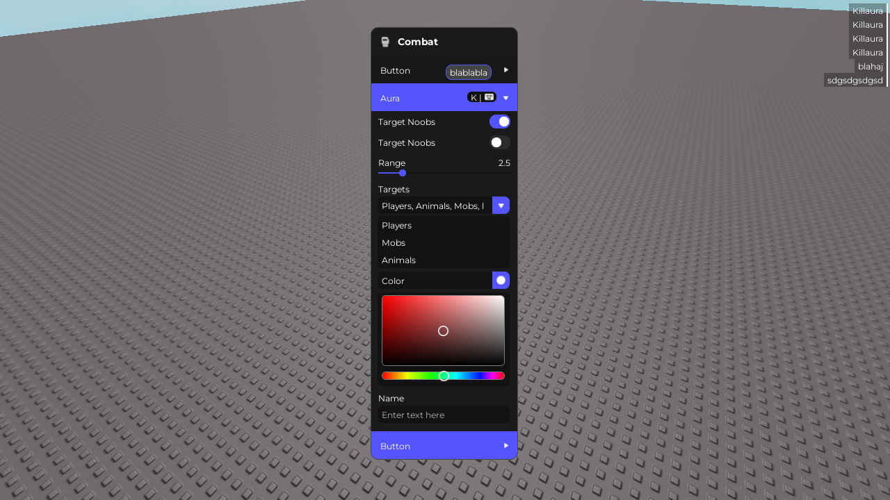
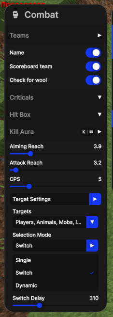
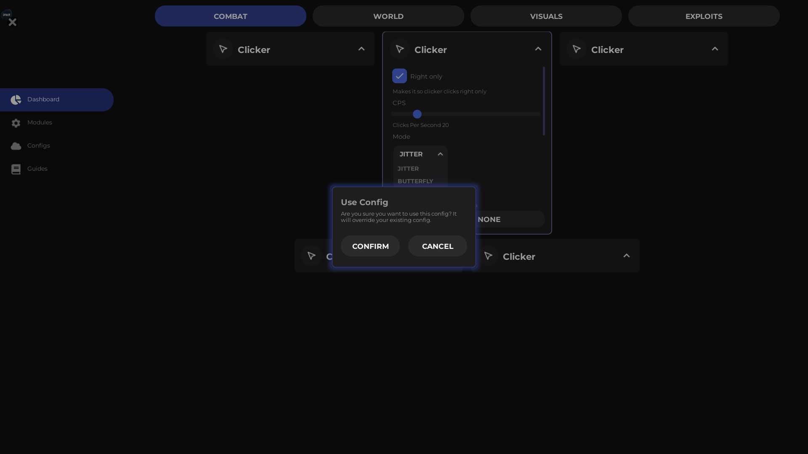
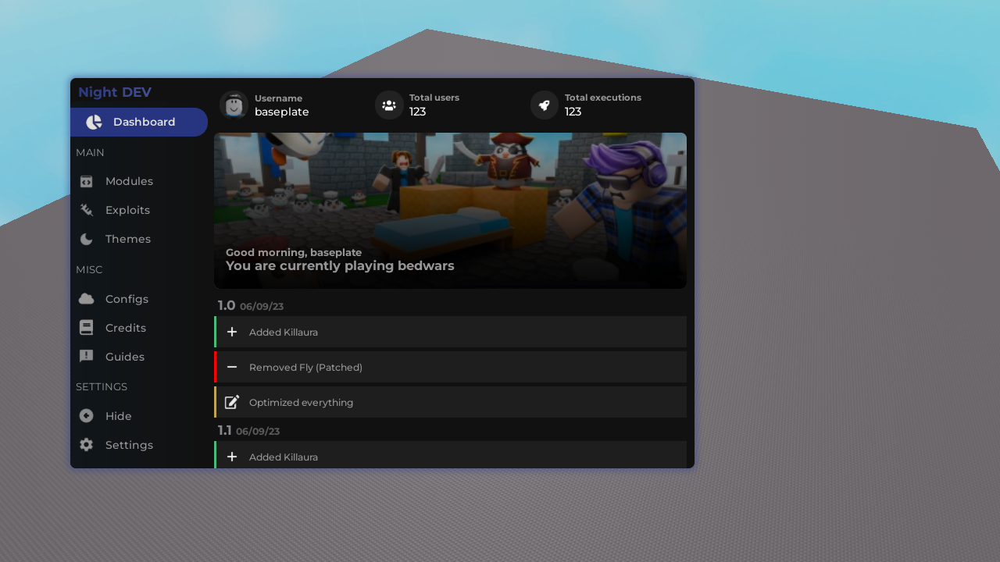
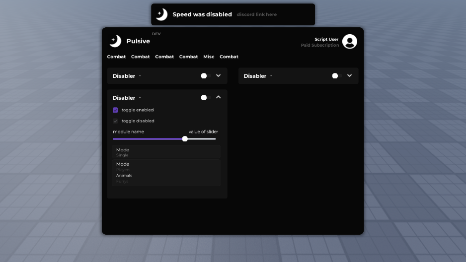
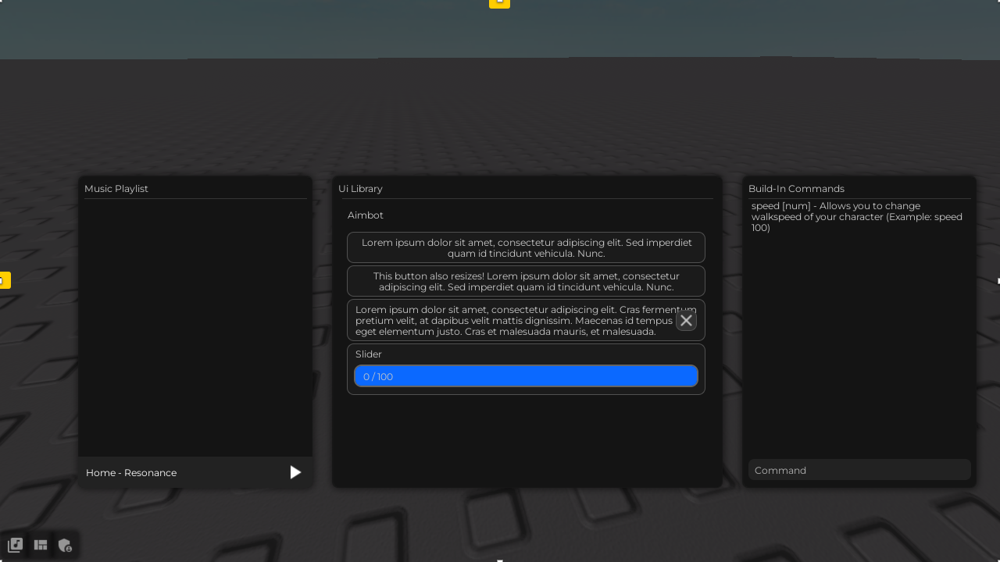

My work, aka portfolio
My work, aka portfolio
Programming
Currently everything that I program is mainly for fun and doesn't have any real value. However I do plan to release some projects:
-
Steam Lookup Tool: Python tool that uses a parameter
?xml=1to display user information in a customtkinter UI with copyable text. I plan to revive and rewrite this project along with doing other stuff related to Steam in the future.
UI Design
Over the past 2 years I have been getting into UI designing. While it's obviously not the greatest work, I am proud of whatever I am doing. Most of my UIs are recreations of other UIs in Roblox for robux, but there are also some original ones.
I do take UI requests and had taken ones before, but please keep in mind that you have to be really patient with me as I am very lazy ¯\_(ツ)_/¯
Here's some of my work (right click and open the picture in a tab):
| My UI | Notes |
|---|---|
|  | Recreation of old Moon client UI.  |
|  | Recreation of the Dream Client's web interface. Done as a request, got paid but the project went nowhere. |
|  | Ditto but with some changes (window instead full screen, more tabs, etc). Done as a request, got paid but the project went nowhere. |
|  | Recreation of Pulsive Client 5.0. Done with a friend, but went nowhere (even tho we had mostly scripted UI Library). I really like this one and might even be my favorite. |
|  | Inspired by Sirius/Rayfield UI Library and was done when I was getting into UI design early on. Definitely one of the good ones. |